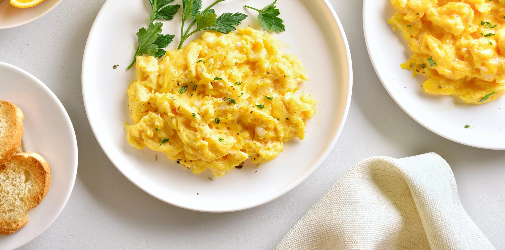

Scrambled Eggs

Description
Scrambled eggs are a simple and delicious breakfast dish
made by gently cooking beaten eggs in a skillet. They are
soft, fluffy, and easy to prepare in just a few minutes.
Ingredients
- 3 large eggs
- 1 tablespoon butter
- 1 tablespoon milk (optional)
- Salt to taste
- Black pepper to taste
- Fresh chives for garnish (optional)
Steps
- Crack the eggs into a bowl.
- Add the milk, if using, and a pinch of salt and pepper.
- Whisk the eggs until the yolks and whites are combined.
- Heat a nonstick skillet over medium-low heat.
- Add the butter and let it melt without browning.
- Pour the egg mixture into the skillet.
- Gently stir the eggs with a spatula, pushing them from the edges toward the center.
- Continue cooking and stirring until the eggs are softly set and no liquid egg remains.
- Remove the skillet from the heat and transfer the eggs to a plate.
- Garnish with fresh chives, if desired, and serve immediately.
Home